Table of Contents
Introduction
This document covers active reconnaissance using Nmap and companion tools inside a contained, virtualized lab with three VMs. We perform host discovery (arp-scan, fping, and Nmap ping scan), then move into TCP/UDP scanning and service fingerprinting. Finally, we use NSE scripts to enumerate common services on a Metasploitable2 host.
Host Discovery
Run ARP, ping sweeps, and Nmap discovery to identify live hosts on the local network.
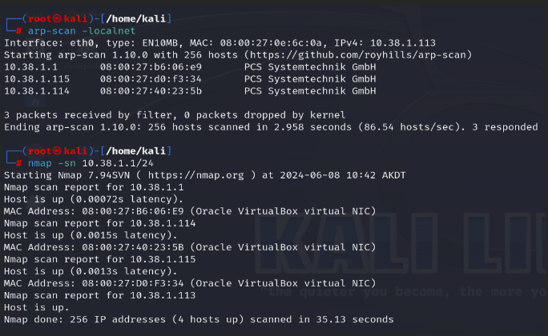
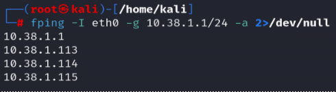
Port Scanning & Host Fingerprinting


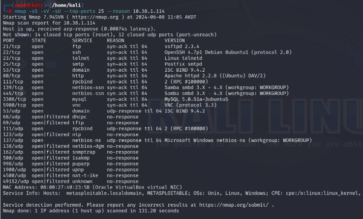
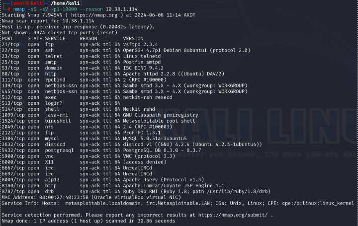
Fingerprinting with Nmap Scripts
Leverage Nmap Scripting Engine to enumerate service details and potential misconfigurations.
FTP Enumeration
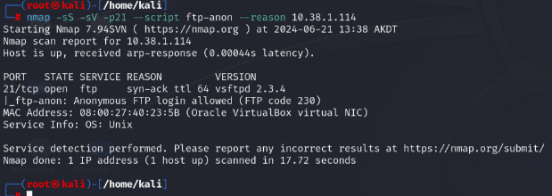
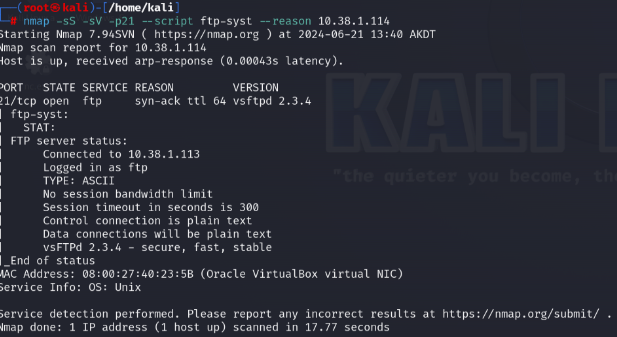
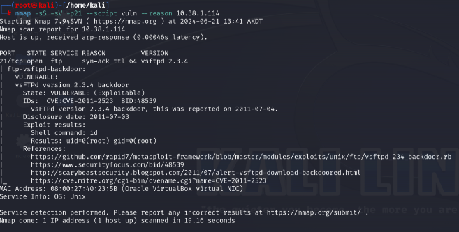
SSH Enumeration
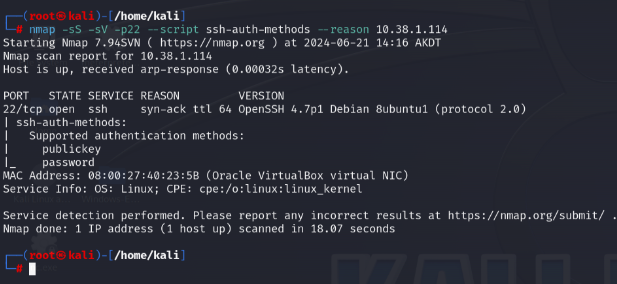
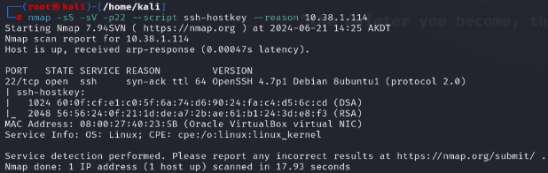
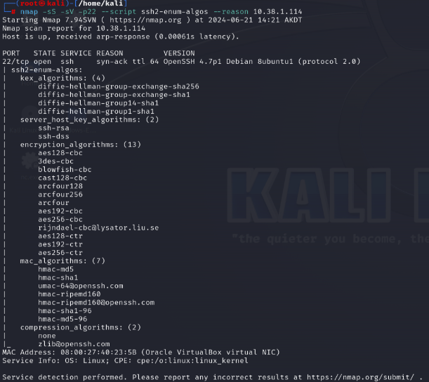
SMB Enumeration
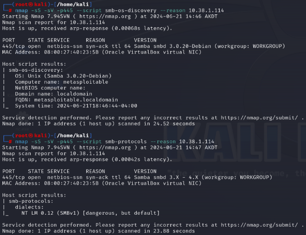
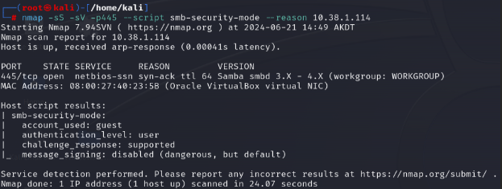
Web Server Enumeration
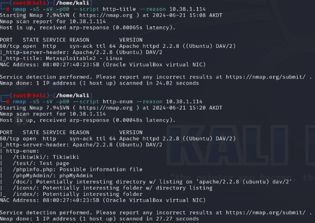
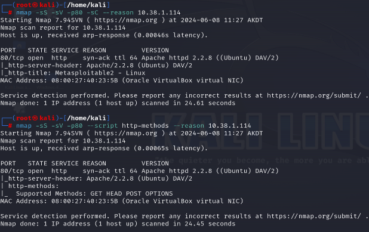
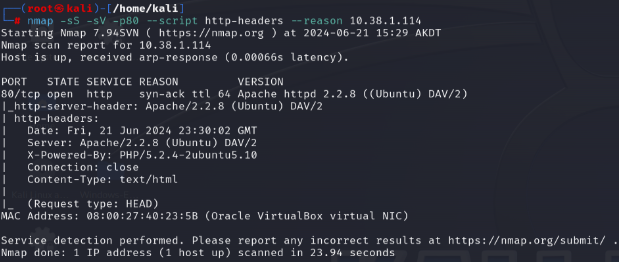
Mitigations
This example goes through performing Active Reconnaissance with the use of arp-scan, fping, and Nmap utilities. The mitigations here are really about limiting what an attacker can figure out in the information gathering phase, rather than stopping a specific exploit.
Mitigating Against Host Discovery (arp-scan, fping, Nmap ping sweep)
Firewall Configuration
Firewalls can be configured to block or not respond to ICMP ping requests, which makes ping-based host discovery blind. With that being said, a host that is not responding to pings can still be found using other methods, so this is more of a speed bump than a true fix in preventing it.
Network Segmentation
This limits what's visible from any given position on a network. If an attacker lands on a user VLAN, they shouldn't be able to ARP sweep into the server or infrastructure VLANs.
Mitigating Against Port Scanning
Firewall Configuration
A properly configured firewall should only have ports open that are actually needed. Every unnecessary open port is information an attacker can use and a potential attack surface.
IDS/IPS - Intrusion Detection Systems / Intrusion Prevention Systems
IDS/IPS systems like Snort or Suricata have signatures for Nmap SYN scans, aggressive service detection, and UDP sweeps. An IDS alone won't stop a scan but will alert on it.
Port Knocking
There is also a technique called Port Knocking, where ports appear closed until a specific sequence of connection attempts is made, hiding services from casual scanning.
Mitigating Against Service Fingerprinting and NSE Scripts
Banner Suppression
The FTP, SSH, and HTTP enumeration sections of this example show just how much version and configuration detail leaks through default banners. Stripping those removes a lot of the value from service detection scans.
SSH
Disabling weak ciphers and key exchange algorithms reduces what's visible to tools like ssh2-enum-algos and also improves the overall security posture.
SMB
Disabling SMBv1 entirely and enforcing SMB signing cuts off a lot of what the SMB NSE scripts are looking for.
Web Server
Suppressing the Server header and disabling unnecessary HTTP methods like PUT and DELETE limits what http-headers and http-methods return.
Anonymous FTP
In this example, anonymous FTP was flagged. Disabling anonymous FTP is a straightforward fix that eliminates that finding entirely.